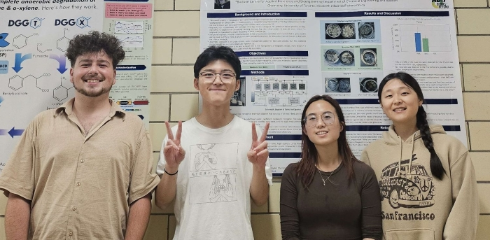

Supervised by Mauricio Garcia Benitez of the Department of Chemical Engineering and Applied Chemistry at the University of Toronto.
During the Winter 2023 semester, myself and three other undergraduates (Catherine Wang, Christina Choo, Chris Ouyang) conducted this study as part of the STEM Fellowship's Indicium Program. We presented our work at the UTSG campus level competition where we placed first. For this, we were selected to participate in the National Indicium conference, where we ranked third of ten teams. For placing in the top three of teams at the conference, our manuscript will be published in the STEM Fellowship's peer-reviewed journal.
You can read the (pre-print) manuscript here. You can download the data here. Additionally, further details are available under the GitHub repository.
 Team Mauricio 2023 (left to right; Samuel P. Dumas, Chris Ouyang, Christina Choo, Catherine Wang)
Third place certificate from STEM Fellowship's National Indicium Conference.